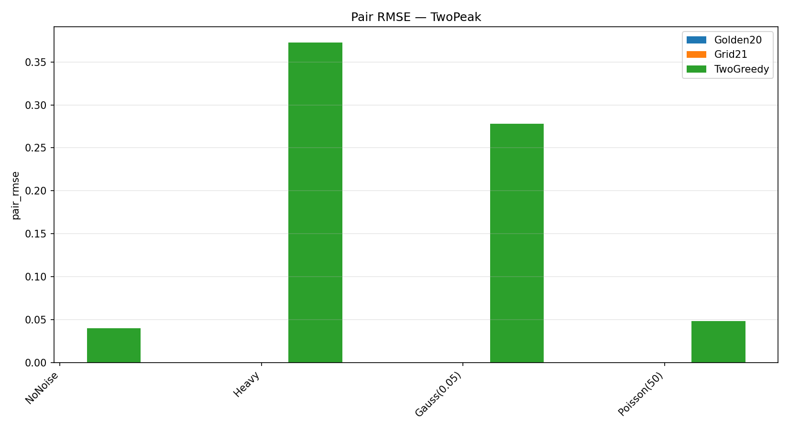
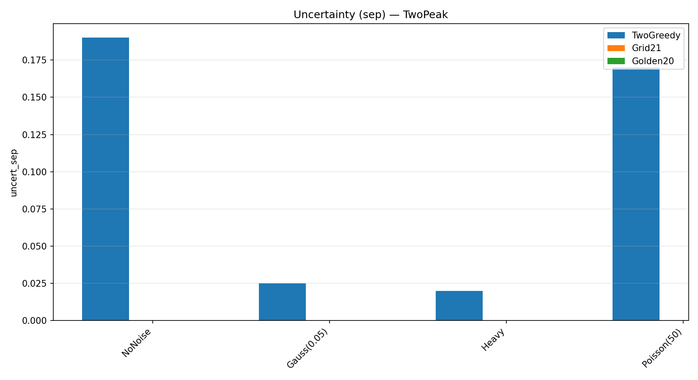
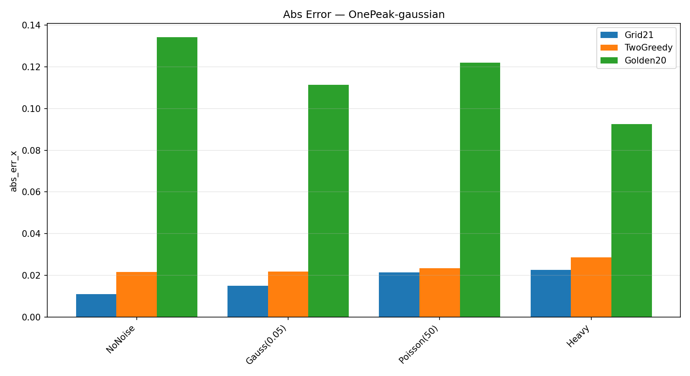
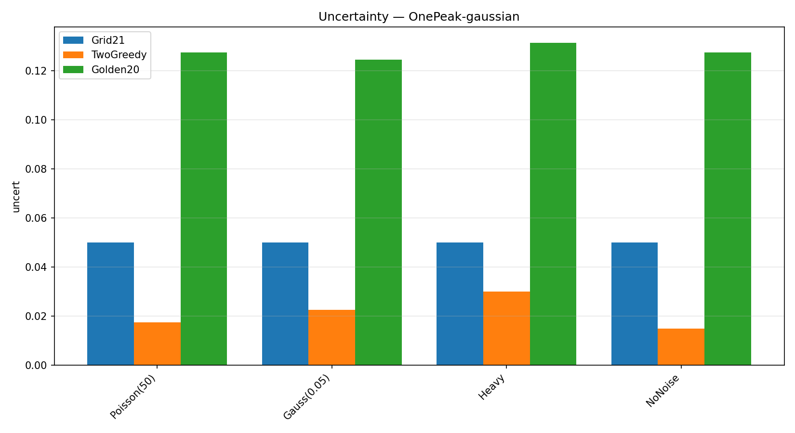
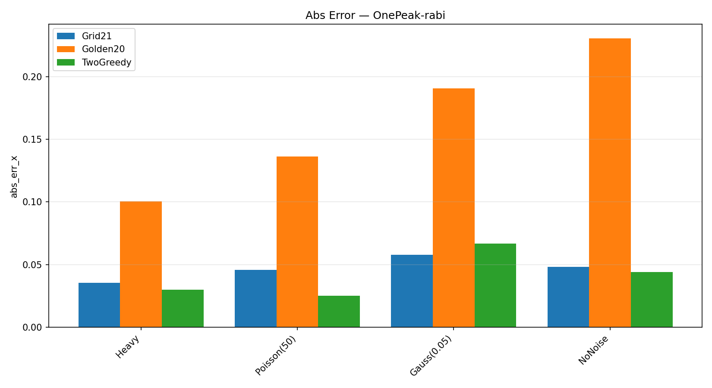
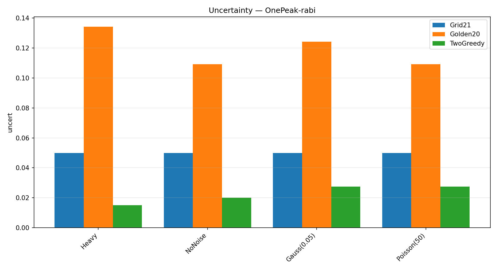
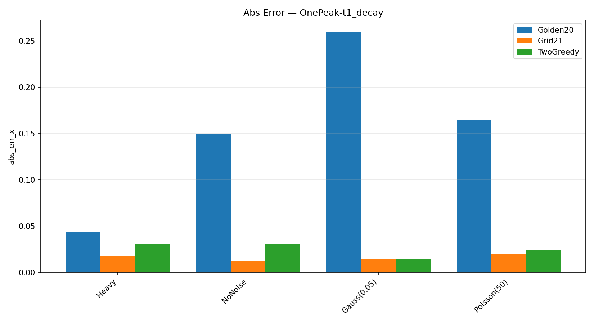
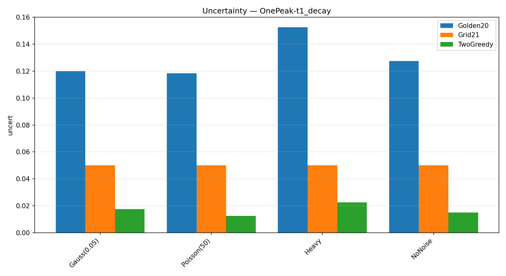

NVision results (artifacts)
Download locator_results.csv
Generated graphs

locator_summary_double_TwoPeak_pair_rmse.png

locator_summary_double_TwoPeak_uncert_sep.png

locator_summary_single_OnePeak-gaussian_abs_err_x.png

locator_summary_single_OnePeak-gaussian_uncert.png

locator_summary_single_OnePeak-rabi_abs_err_x.png

locator_summary_single_OnePeak-rabi_uncert.png

locator_summary_single_OnePeak-t1_decay_abs_err_x.png

locator_summary_single_OnePeak-t1_decay_uncert.png